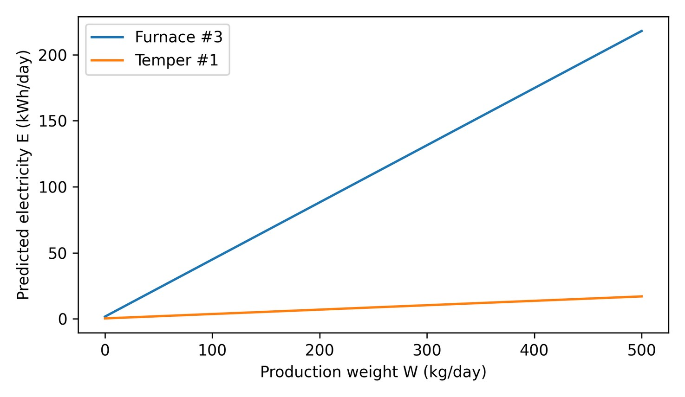

데이터로 찾는 산업·건물 에너지절감 실무 — 41쪽
SHAFT 열처리로와 템퍼로의 MES 생산정보 및 EMS 전력정보를 연결한 사 례다. 동일 432 kg 생산중량에서도 소비전력이 달랐으며, 표준소요시간 초과 와 로딩·대기·가열 Profile 의 영향을 함께 확인했다. 열처리로#3: 동일 432kg 조건에서도 약 180~192kWh 범위로 변동 템퍼로#1: 동일 432kg 조건에서 약 10~19kWh 범위로 변동 분석데이터: 일별 생산중량·생산수량·소요시간, 설비별 전력사용량, 예외 Event KPI·Baseline·진단 로직 표 6-1. 설비 · WLS Baseline · Adjusted R² · RMSE · CV(RMSE) 설비 WLS Baseline Adjusted R² RMSE CV(RMSE) 열처리로#3 E = 0.4325W + 1.7336 0.9995 4.865 kWh 0.93% 템퍼로#1 E = 0.0333W + 0.3784 0.9898 2.097 kWh 4.86% 그림 6-1. 생산중량 기반 WLS Baseline 식의 민감도. [S01]의 공개식을 출판용으로 재구성.

인쇄본 기준 p. 41